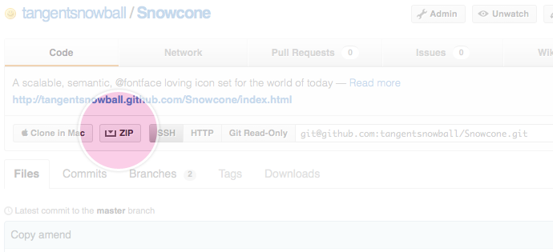

This font set has been lovingly designed by the Tangent Snowball team to be an easily adjustable set of icons to use on websites and web–apps. Using a font set ensures all icons are fully scalable and only need one header call. It is currently in its infancy but we'll be expanding it henceforth.
Fork it here
Support
Snowcone works on all browsers. For IE6-7 (due to the fact they dont support :before), a jQuery fix has been included.
Implementation
-
Download the files from the repo

- Add the files within the /package/ directory to an appropriate place on your site (you can always just copy the classes from the CSS files into your own CSS - one less header call!).
- If IE6–7 support is needed, include the snowcone.js file. To see how this is put together, take a look at the demo.
- Included in snowcone.css are a set of classes that call each icon. To include an icon in your page, attach one of these classes, and the base icon class to any element (as shown below). For the full set of class names, take a look at the CSS file, or the demo
An example
Contact me
<p class="snowcone sc-email">Contact me</p>
Meet the family (small right now but more are arriving)
- Tick
- Cross
- Alert
- Expand
- Contract
- Home
- View
- Sync
- Down
- Up
- Right
- Left
- Stop
- Map marker
- Favourite
- Profile
- Magnify
- Settings
- Edit
- Email
- Shopping bag
- Logout
- Love this
- Link
- Mobile
- Down filled
- Up filled
- Right filled
- Left filled
- Facebook
- Google+
- Blacklist
- Tag
- Speedo (by Natho)
- Tangent logo
In practice
Jack Armley
Front–end designer at Tangent Snowball